👉Tidyplots📦 is an R package to generate publication-ready plots for scientific papers, created by Jan Broder Engler (Engler 2025).
👉Tidyplots is based on ggplot2.
👉Instead of extending the ggplot2 syntax, tidyplots introduces a novel interface based on a consistent and intuitive grammar that minimizes the need of programming experience.
1.1.1 Highlights
👉Easy code-based data visualization for science.
👉Intuitive syntax to add, remove, and adjust plot components.
👉Reduced code complexity in comparison to ggplot2 (making plotting easier for beginners).
1.1.2 Citation
citation("tidyplots")
To cite package 'tidyplots' in publications use:
Engler JB (2025). "Tidyplots empowers life scientists with easy
code-based data visualization." _iMeta_, e70018.
doi:10.1002/imt2.70018 <https://doi.org/10.1002/imt2.70018>.
A BibTeX entry for LaTeX users is
@Article{,
title = {Tidyplots empowers life scientists with easy code-based data visualization},
author = {Jan Broder Engler},
journal = {iMeta},
pages = {e70018},
year = {2025},
doi = {10.1002/imt2.70018},
}
1.2 Prerequisites
1.2.1 Install R and its integrated development environment (IDE)
1.2.2 Install tidyplots package and other packages
# Install the released version from CRAN:install.packages("tidyplots")# Install the development version from GitHub:# Install.packages("pak") # install pak if not already installedpak::pak("jbengler/tidyplots")# Install a specific versionpak::pak("jbengler/tidyplots@v0.0.1")# Install a specific commitpak::pak("jbengler/tidyplots@4a08bfe")
# For exampleinstall.packages("tidyverse")
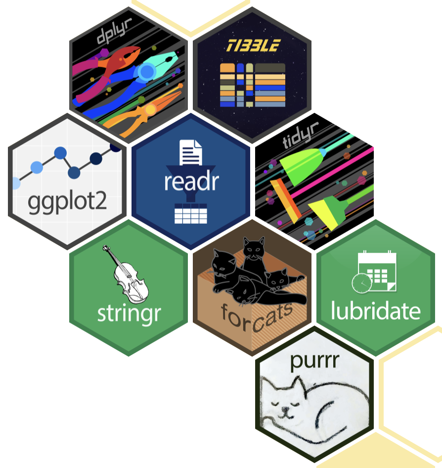
Tidyverse hex logos. The tidyverse is an opinionated collection of R packages (e.g. ggplot2, tibble, and dplyr) designed for data science.
How to read your data
Your (experimental) data might be in the formats of .xlsx, .csv (comma-seperated values), or .txt (saved as tab-seperated values).
Here are the saved files with different formats from the tidyplotsstudy dataset for illustration.
"data/"|> fs::dir_tree(regexp ="^data/study")
data/
├── study.csv
├── study.txt
└── study.xlsx
Tip
The keyboard shortcut for the pipe operator |> is Ctrl + Shift + M (i.e. click Ctrl, Shift, and M simultaneously) on Windows and Cmd + Shift + M on the Mac.
How to read .csv file
study_csv <-"data/study.csv"|> readr::read_csv()
Rows: 20 Columns: 7
── Column specification ────────────────────────────────────────────────────────
Delimiter: ","
chr (5): treatment, group, dose, participant, sex
dbl (2): age, score
ℹ Use `spec()` to retrieve the full column specification for this data.
ℹ Specify the column types or set `show_col_types = FALSE` to quiet this message.
# The dimension (rows by columns) of study_csvstudy_csv |>dim()
[1] 20 7
Note
study.csv, as well as several other example datasets used throughout this book, can be downloaded from https://github.com/iamhealthy/tidyplots-book/tree/main/data.
Tip
The keyboard shortcut for the assignment operator <- is Alt + - (i.e. click Alt and - simultaneously) on Windows and Option + - (i.e. click Option and - simultaneously) on the Mac.
How to read .txt file
study_txt <-"data/study.txt"|> readr::read_tsv()
Rows: 20 Columns: 7
── Column specification ────────────────────────────────────────────────────────
Delimiter: "\t"
chr (5): treatment, group, dose, participant, sex
dbl (2): age, score
ℹ Use `spec()` to retrieve the full column specification for this data.
ℹ Specify the column types or set `show_col_types = FALSE` to quiet this message.
# The dimension (rows by columns) of study_csvstudy_txt |>dim()
[1] 20 7
How to read .xlsx file
study_xlsx <-"data/study.xlsx"|> readxl::read_xlsx(sheet ="Sheet1")# The dimension (rows by columns) of study_xlsxstudy_xlsx |>dim()
👉Each variable is a column; each column is a variable.
👉Each observation is a row; each row is an observation.
👉Each value is a cell; each cell is a single value.
Using the tidy data tidyplotsstudy dataset for a quick overview.
tidyplots::study |> tibble::tibble()
# A tibble: 20 × 7
treatment group dose participant age sex score
<chr> <chr> <chr> <chr> <dbl> <chr> <dbl>
1 A placebo high p01 23 female 2
2 A placebo high p02 45 male 4
3 A placebo high p03 32 female 5
4 A placebo high p04 37 male 4
5 A placebo high p05 24 female 6
6 B placebo low p06 23 female 9
7 B placebo low p07 45 male 8
8 B placebo low p08 32 female 12
9 B placebo low p09 37 male 15
10 B placebo low p10 24 female 16
11 C treatment high p01 23 female 32
12 C treatment high p02 45 male 35
13 C treatment high p03 32 female 24
14 C treatment high p04 37 male 45
15 C treatment high p05 24 female 56
16 D treatment low p06 23 female 23
17 D treatment low p07 45 male 25
18 D treatment low p08 32 female 21
19 D treatment low p09 37 male 22
20 D treatment low p10 24 female 23
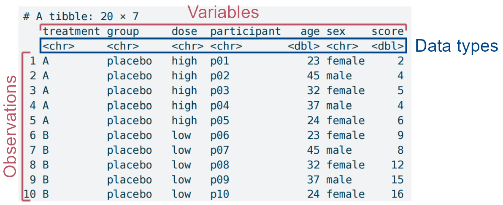
The structural dissection of the study dataset in tidyplots, with particular attention to data types, which can sometimes determine whether plotting succeeds.
The study dataset has the following features:
👉 A so-called data frame of tibble (20 rows by 7 columns).
👉 7 columns mean 7 variables (i.e. treatment, group, dose, participant, age, sex, and score).
👉 Each column/variable has a specific data type (e.g. treatment is character (chr), age is double (dbl) etc.)
Bitmaps. These are composed of individual pixels: e.g. photographs and micrographs (e.g. in tif/tiff, jpeg, png, and pdf formats).
Vector images. These are composed of lines, curves, shapes, or text. The instructions needed to draw the image (i.e. coordinates, equations, fonts) are stored rather than pixels, and then the image is recreated from these instructions when necessary. (e.g. in pdf, svg, and eps formats)
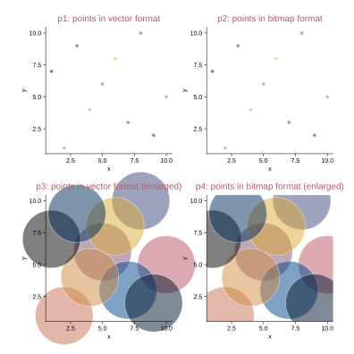
Vector images vs. bitmaps. The points in bitmap format, especially enlarged, are not sharp compared to the points in vector format.
1.3.2 Figure format selection
For journals: the bitmap format of tiff (perhaps with lossless LZW compression), or the vector formats (e.g. pdf and svg).
For presentation: png (file size is small).
For website: jpeg or png (file size is small).
1.4 Color schemes and the cognate gray ones
Tidyplots comes with a number of default color schemes, as accessed via typing ?tidyplots::colors_ in R console.
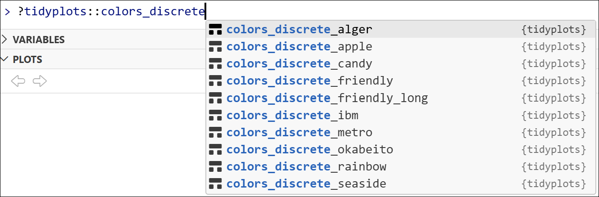
Discrete schemes (for categorical variables).
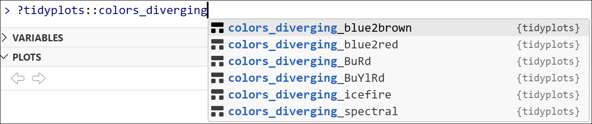
Diverging schemes (for continuous variables that have a central point in the middle).
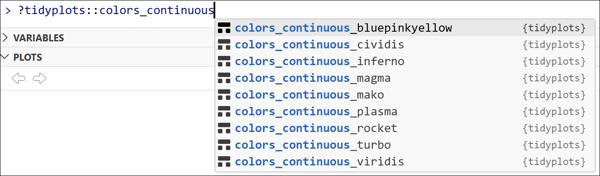
Continuous schemes (for continuous variables).
1.4.1 Discrete color schemes and the cognate gray ones
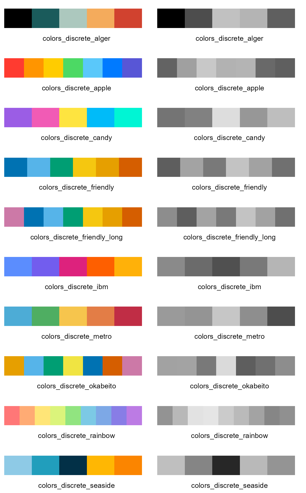
Discrete color schemes (left panel), and the cognate gray ones (right panel). The color sequence of each scheme is from left to right.
1.4.2 Discrete color schemes and the cognate gray ones
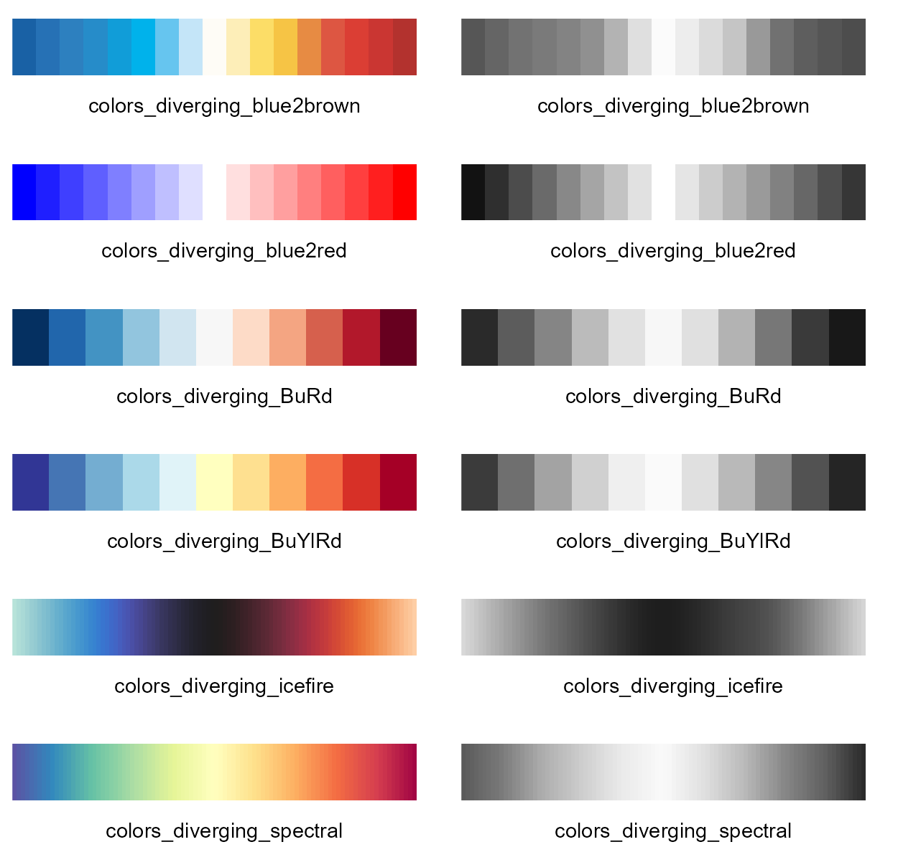
Diverging color schemes (left panel), and the cognate gray ones (right panel). The color sequence of each scheme is from left to right.
1.4.3 Continuous color schemes and the cognate gray ones
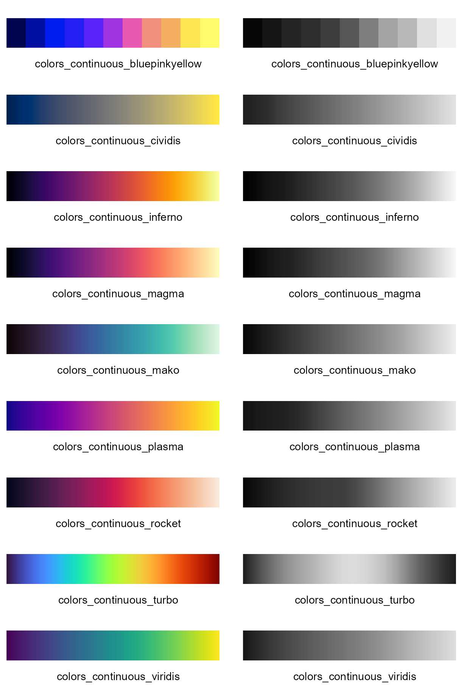
Continuous color schemes (left panel), and the cognate gray ones (right panel). The color sequence of each scheme is from left to right.
1.4.4 High/medium-contrast qualitative color schemes
Paul Tol discribed high/medium-contrast qualitative colour schemes, which are colour-blind safe, and the cognage gray ones also show appropriate contrast (https://sronpersonalpages.nl/~pault/) (Tol 2021).
Here below are the high/medium-contrast qualitative color schemes, and the cognate gray ones (except the 1st color of white “#ffffff”).
High-contrast qualitative color scheme and the cognate gray one
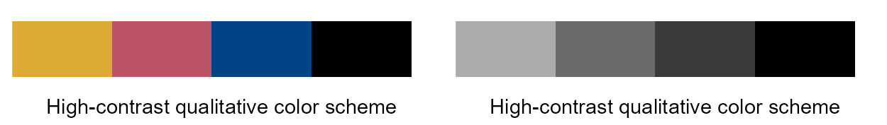
High-contrast qualitative color scheme (left panel), and the cognate gray one (right panel). The color sequence of the scheme is from left to right (“#ddaa33”, “#bb5566”, “#004488”, “#000000”).
Medium-contrast qualitative color scheme and the cognate gray one
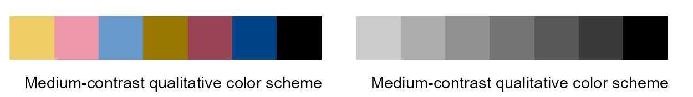
Medium-contrast qualitative color scheme (left panel), and the cognate gray one (right panel). The color sequence of the scheme is from left to right (“#eecc66”, “#ee99aa”, “#6699cc”, “#997700”, “#994455”, “#004488”, “#000000”).
Note
The figures throughout this book use the high-contrast qualitative color scheme by default, unless a different scheme is explicitly specified in the code.
This choice ensures not only strong visual contrast and color-blind safe, but also that distinctions remain clear when the book are printed in grayscale.
1.5 Acknowledgements
The preparation of this cookbook has no direct relation to Jan Broder Engler (the developer of tidyplots), so I feel a little “guilty” about “stealing” his ideas and code.
When this cookbook was roughly ready, I wrote to Jan, and he replied:
Hi Kang,
Thank you for your email!
Feel free to offer additional resources for tidyplots. Let me know when they are available. I was also thinking about writing a book about tidyplots, but I currently do not have the time.
Therefore, I will donate 55% of any paid proceeds (if there are any) to Jan’s project: https://github.com/jbengler/tidyplots.
Engler, Jan Broder. 2025. “Tidyplots Empowers Life Scientists with Easy Code-Based Data Visualization.”iMeta, e70018. https://doi.org/10.1002/imt2.70018.